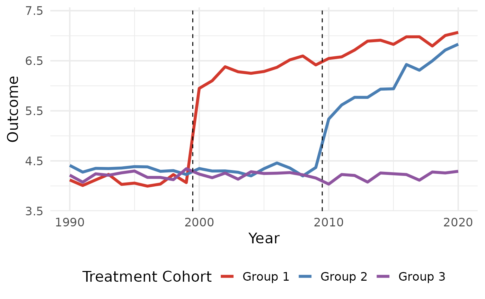

did_imputation
did_imputation.Rmd
library(didimputation)## Loading required package: fixest## Loading required package: data.table
#> Loading required package: fixest
#> Loading required package: data.table
library(fixest)
library(ggplot2)
# Load Data from did2s package
data("df_het", package = "didimputation")
data.table::setDT(df_het)
# Plot Data
df_avg <- df_het[,
.(dep_var = mean(dep_var)),
by = .(group, year)
]
# Get treatment years for plotting
gs <- df_het[treat == TRUE, unique(g)]
ggplot() +
geom_line(data = df_avg, mapping = aes(y = dep_var, x = year, color = group), size = 1.5) +
geom_vline(xintercept = gs - 0.5, linetype = "dashed") +
theme_minimal(base_size = 16) +
theme(legend.position = "bottom") +
labs(y = "Outcome", x = "Year", color = "Treatment Cohort") +
scale_y_continuous(expand = expansion(add = .5)) +
scale_color_manual(values = c("Group 1" = "#d2382c", "Group 2" = "#497eb3", "Group 3" = "#8e549f"))## Warning: Using `size` aesthetic for lines was deprecated in ggplot2 3.4.0.
## ℹ Please use `linewidth` instead.
## This warning is displayed once every 8 hours.
## Call `lifecycle::last_lifecycle_warnings()` to see where this warning was
## generated.
#> Warning: Using `size` aesthetic for lines was deprecated in ggplot2 3.4.0.
#> ℹ Please use `linewidth` instead.
#> This warning is displayed once every 8 hours.
#> Call `lifecycle::last_lifecycle_warnings()` to see where this warning was
#> generated.